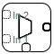
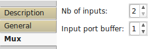

Mux

Mux is an asynchronous time multiplexer.
Input Ports:
- In X data type = Any, n >= 2
Input ports. - Idx data type = Int32
Index of input.
Output Ports:
- Out data type = Any
Output port.
Properties:

- Number of inputs: <integer>
- Input port buffer: <integer>
Data coming to inactive port can be cached and send when you activate port.